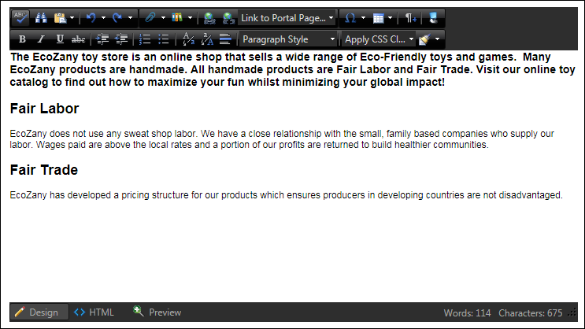
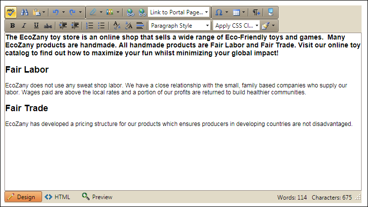
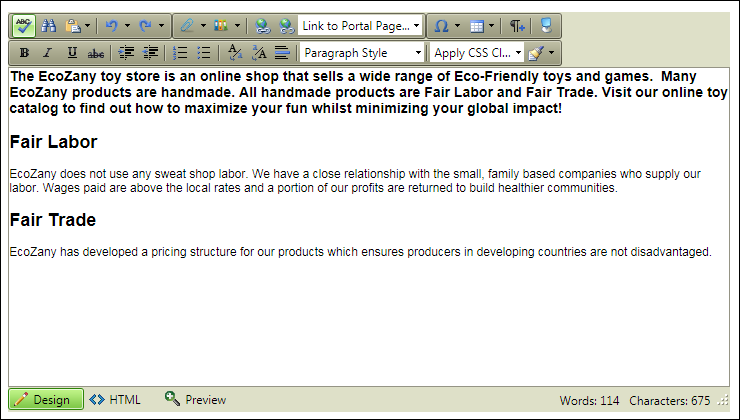
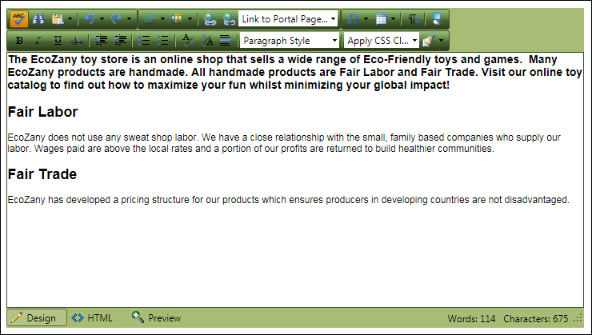
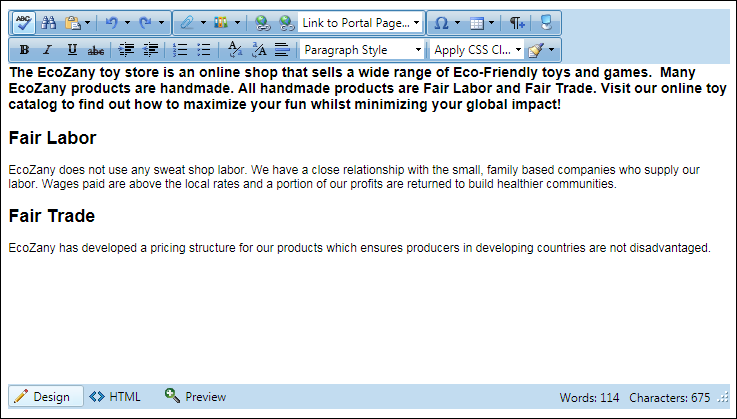
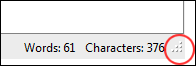

Common Settings
Sets the skin design for the Editor. Note: The top left button in each of the below screen captures show how the buttons look during hover. Select from these options:
Default: Light gray toolbars. Buttons darken slightly upon hover.
Black: Black toolbars. Buttons lighten slightly upon hover.

Sunset: Light gray toolbars. Buttons become orange upon hover.

Hay: Green-gray toolbars. Buttons become light green upon hover.

Forest: Forest green toolbars. Buttons become orange upon hover.

Vista: Blue toolbars. Buttons lighten upon hover.

Check the check box to enable one or more of the available editing modes. All three are enabled by default.
- Design: Edit and format the content by using the RadEditor toolbars.
- Html: View and manage content in HTML.
- Preview: Preview the Editor content.
Note: If all options are disabled, then all three modes are enabled.

Enforces content formatting. As a result, format stripping will be applied to all content that users are trying to paste. The EditorStripFormattingOptions setting can have any or a combination of the following values:
- NoneSupressCleanMessage: Doesn't strip anything on paste and does not ask questions.
- MSWord: Strips Word-specific tags on Paste, preserving fonts and text sizes
- MSWordNoFonts: Strips Word-specific tags on Paste, preserving text sizes only
- MSWordRemoveAll: Strips Word-specific tag on Paste, removing both fonts and text sizes. This option is selected by default.
- Css: Strips CSS styles on Paste
- Font: Strips font tags on Paste.
- Span: Strips Span tags on Paste.
- AllExceptNewLines: Clears all tags except line breaks and new lines on paste.
- ConvertWordLists: Converts Word ordered/unordered lists to HTML tags.
- MSWordNoMargins: Strips the MSWord related attributes and tags and font tags.
-
/Home.aspx -
http://awesomecycles.biz/Home.aspx
- Normal: Select to use the relevant URL's for page links. E.g.
/Home.aspx - Use Page Name in URL: Select to use the page name in the page URL. E.g.
/Default.aspx?TabName=Home. Warning. If the name of the linked page is changed, then the link will break and will need to be manually updated. - Use Page Id in URL: Select to use the tab ID number in the page URL. E.g.
/Default.aspx?tabID=1
Select how you want to edit the document:
- Iframe: Edit in a separate document. This is the default setting.
- Div: Edit inline within the current page.